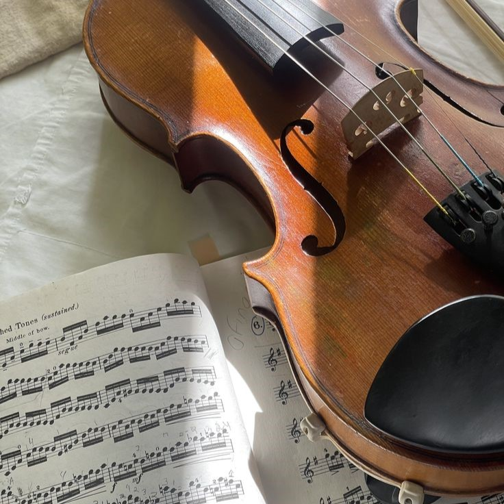
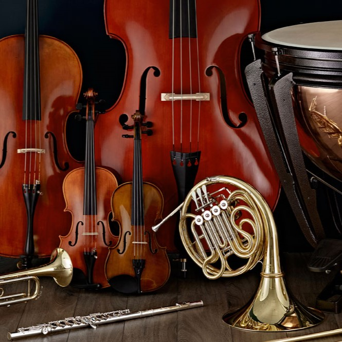

A fejlődés öröme
Online órák lehetősége
Próbahónap kedvezmény új növendékeknek
Fellépési lehetőség évközi minikoncerteken
Rugalmas időbeosztás (délutáni, esti és hétvégi órák)
Kezdőbarát tananyag – ha sosem zenéltél, akkor is bátran indulhatsz
A legjobb érzés, amikor a tanulók felismerik: igen, képesek rá. A zenetanulás nem verseny – hanem egy út, amin végig öröm menni.
Az Ongaku több, mint hangszerbolt vagy zeneiskola – egy olyan hely, ahol a zene életre kel. Hiszünk abban, hogy a zene nem luxus, hanem szükséglet: öröm, kreativitás és közösség egyben.
Célunk, hogy mindenki megtalálja a saját hangját, legyen kezdő vagy profi, gyerek vagy felnőtt. Oktatóink nemcsak tudást adnak át, hanem szenvedélyt is, és minden hangszert, órát és szolgáltatást úgy alakítunk, hogy a zenélés valódi élmény legyen.
Az Ongku tere inspiráció, találkozás és együttzenélés helye – ahol a zene hidat épít emberek között, és minden dallam örömet hoz.
Az Ongaku nem csupán egy hely, ahol hangszert vásárolsz vagy órákra jársz. Mi egy olyan környezetet szeretnénk teremteni, ahol a zene újra közösségi élménnyé válik.
A zene nem luxus. A zene szükséglet. A zene az kell.

